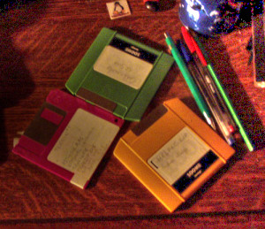

Figure 16.198. “Fattal et al. 2002” tone mapping example

Original image

Filter applied with default settings, after changing image precision in GIMP to 32-bit floating point linear light.
This filter can be used to adapt an image, which may have a high dynamic range (HDR), for presentation using a low dynamic range. This operation reduces the magnitudes of local image gradients, producing luminance within the range 0.0-1.0.
This tonemapping approach was originally presented by Raanan Fattal, in the 2002 SIGGRAPH paper: Gradient Domain High Dynamic Range Compression.
![[Note]](images/note.png)
|
Note |
|---|---|
|
This filter is slow on larger images. For finding the best settings for your image you could make a small relevant selection first and save that as a preset before using that for the whole image. |

- Presets, Input Type, Clipping, Blending Options, Preview, Merge filter, Split view
-
Note These options are described in Section 8.1.2, “Colors Common Features”.
- Alpha
-
Gradient threshold for detail enhancement.
- Beta
-
Strength of local detail enhancement.
- Saturation
-
Global color saturation factor.
- Noise
-
Gradient threshold for lowering detail enhancement.